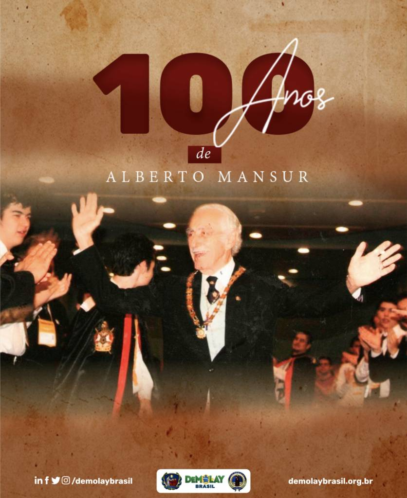

100 anos de Alberto Mansur
Descendente de Libaneses, Alberto Mansur nasceu em 7 de setembro de 1922, sendo seu prenome uma homenagem ao Rei Alberto I, da Bélgica, que visitou o Brasil naquele ano.
Alberto Mansur conheceu sua esposa, Célia, em um baile de verão na cidade de Miguel Pereira (RJ), noivando-se em 27 de agosto de 1947, dia do aniversário de sua companheira.
Motivado pela figura do seu falecido tio, José Nemehtalla, que foi maçom na cidade de Bragança Paulista, e no livro “Ideal iniciático" de Oswald Wirth, Mansur ingressou na Loja Maçônica "Perfeita União” em 30 de setembro de 1950, a convite de Chaia Cheinferber, um amigo comerciante.
Alberto Mansur atingiu o grau 33 em 12 de dezembro de 1964. Após uma gestão prestigiosa como Inspetor Litúrgico para o Estado da Guanabara, Mansur foi reconhecido no Supremo Conselho do Grau 33, sendo eleito como Membro Efetivo dessa organização em 1968 e, em 1974, tornou-se Soberano Comendador, função que contribuiu para seu contato com a Ordem DeMolay.
Alberto Mansur conheceu a Ordem DeMolay por meio da revista “The New Age”, em uma homenagem comemorativa aos 50 anos da instituição. Anos seguintes, em 1974, Mansur conheceu George Newburry, Soberano Grande Comendador da Jurisdição Norte dos Estados Unidos, que mediou o primeiro contato bem sucedido entre Alberto Mansur e o Supremo Conselho Internacional.
Em 1979, em uma visita aos Estados Unidos, Alberto Mansur conheceu a cidade de Kansas City, tornando-se grande amigo do Grande Mestre Internacional (1979-1980) “Budy” Falkner, que naquele ano o nomeou Oficial Executivo do SCI no Brasil, sendo incubido com a terefa de fundar a Ordem no nosso país.
Em 12 de abril de 1985, Don Wright, à época Grande Mestre Internacional, entregou a Alberto Mansur a carta de um novo Supremo Conselho: independente, soberano e BRASILEIRO. Na ocasião, Mansur foi empossado primeiro Grande Mestre.
Motivado pelo desejo de dedicar-se exclusivamente a Ordem DeMolay, em 12 de março de 1988, Alberto Mansur renunciou ao cargo de Soberano Grande Comendador, tornando-se o primeiro a sair do cargo enquanto vivo.
Além da Ordem DeMolay, Alberto Mansur também teve grande papel na fundação de duas outras ordens paramaçônicas no Brasil: a Ordem Internacional das Filhas de Jó e a Ordem da Estrela do Oriente.